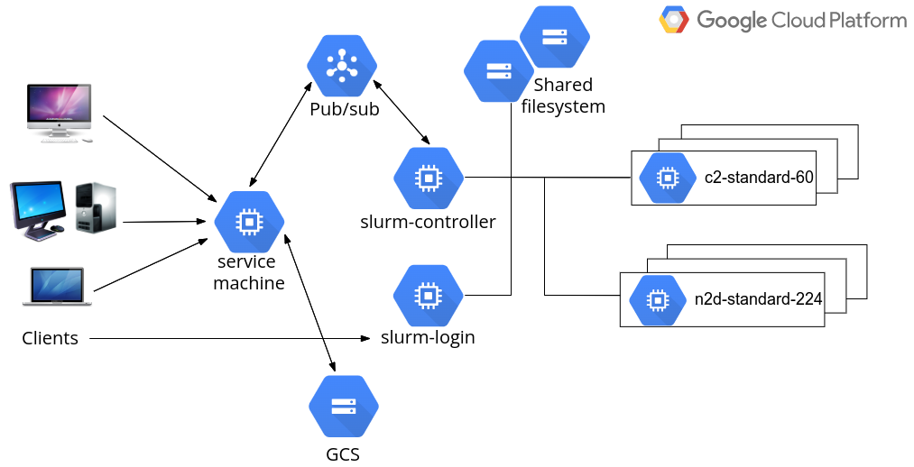

Developer Guide
Architecture design
The HPC Toolkit FrontEnd is a web application integrating several front-end and back-end technologies. Django, a high-level Python-based web framework, forms the foundation of the web application. The back-end business logics can mostly be delegated to Terraform to create GCP cloud infrastructure required by the HPC clusters. With HPC Toolkit, there is no need to define infrastructure configurations from scratch. Rather, a high-level description of the clusters are provided for it to generate Terraform configurations.
The overall system design is described in the following figure:

In most cases, end-users are expected to use and communicate with the cloud systems via the FrontEnd. Of course, users from a traditional supercomputing background may wish to work with HPC clusters from the command line. This is entirely possible through the Slurm login nodes.
A single compute engine virtual machine, referred to as the service machine from now on, should be created to host the application server, webserver and database server. In large productions, these servers can of course be hosted on different machines if desired.
The web application is built upon Django, a Python framework to develop data-driven dynamic websites. An nginx server is configured to serve the static files of the website, as well as proxying Django URLs to the application server. (Uvicorn is the chosen application server). Application data is stored in a file-based SQLite database which can be easily replaced by a managed SQL service for large production environments.
From the web application, HPC clusters can be created on GCP by administrators. A typical HPC cluster contains a single Slurm controller node, and one or more login nodes, typically all running on low- to mid-range virtual machines. The controller node hosts the Slurm job scheduler. Through the job scheduler, compute nodes can be started or terminated as required. The controller node and login nodes all provide public IP addresses for administrators or users to SSH into, although doing so is not mandatory as day-to-day tasks can be performed via the web interface.
The Slurm job scheduler supports partitions. Each partition can have compute nodes of different instance types. All major HPC capable instance types can be supported from a single cluster if so desired. Of course, it is also possible to create multiple clusters, which is entirely an operational decision by the administrators.
For each cluster, two shared filesystems are created to host a system directory for applications and a home directory for users' job data. Additional filesystems can be created or imported, to be mounted to the clusters.
For each deployment, a GCS bucket is created to hold supporting files, including configurations to build the service machine, and Ansible configurations to set up various Slurm nodes. The same GCS bucket is also served as a long-term backup to application and job data, including log files for most cloud operations and selected files created by jobs.
Communication between the service machine and clusters is handled by Pub/Sub. For technical details, consult the Cluster Command & Control document. Alternatively, there is an API layer around Django to allow incoming communication to the service machine.
Deploy the system
Please follow the deployment section in the Administrator’s Guide to deploy the system for testing and development.
Here are some notes from a developer's perspective:
- The deployment is done using Terraform.
- When
deploy.shis invoked, it validates the client machine's development environment, collects configuration information from user, save input variables intf/terraform.tfvars, and invoke Terraform. - The deploy script will check the GCP project being used has the correct
APIs enabled. The list of required APIs is embedded in
deploy.shscript - this will need to be maintained. - The deploy script will also, optionally, use an additional script,
script/service_account.sh, to create a GCP service account. This sets the correct roles/permissions on the account based on a list kept in the script - this will need to be maintained. - Terraform creates a hosting VPC and a subnetwork for the deployment, together with the necessary firewall rules.
- Terraform creates a supporting GCS bucket. This bucket is not only used during deployment, but also provides a long-term storage for clusters operating within this deployment.
- Terraform sets up a Pub/Sub topic for communication between the service machine and clusters.
- Terraform provisions a compute engine virtual machine to be the service machine. A startup script is then executed on the service machine to set up the software environment for HPC Toolkit and Django, and start the web and application servers.
Access the service machine
By default, access to the service machine is restricted to authorised users (the owner/editor of the hosting GCP project or other users delegated with sufficient permissions). Use one of the following two methods to access the system after a new deployment:
- SSH into the service machine directly from the GCP console of the hosting GCP project.
- Edit the hosting VM instance by uploading the public SSH key of a client machine to grant SSH access.
Immediately after login, run sudo su -l gcluster to become the gcluster
user. This user account was created during the deployment to be the owner of
the FrontEnd files.
Directory structures on service machine
The home directory of the gcluster account is at /opt/gcluster. For a new deployment, the following four sub-directories are created:
go- the development environment of the Go programming language, required to build Google HPC Toolkithpc-toolkit- a clone of the Google HPC Toolkit project. Theghpcbinary should have already been built during the deployment. Thefrontendsub-directory contains the Django-based web application for the FrontEnd and other supporting files.django-env- a Python 3 virtual environment containing everything required to support Django development. To activate this environment:source ~/django-env/bin/activate. Doing so may be required during the development, e.g., when running the Djangomanage.pyscript for administration tasks.run- directory for run-time data, including the following log files:nginx-access.log- web server access log.nginx-error.log- web server error log.supvisor.log- Django application server log. Pythonprintfrom Django source files will appear in this file for debugging purposes.django.log- additional debugging information generated by the Python logging module is writen here.
Run-time data
For cloud resources
Run-time data to support creating and managing cloud resources are generated
and stored in the following sub-directories within hpc-toolkit/frontend on
the service machine:
clusters/cluster_\<id>- holding run-time data for a cluster.\<id>here has a one-to-one mapping to the IDs shown in the frontend's cluster list page. The directory contains the following:cluster.yaml- input file forghpc, generated based on information collected from the web interface.\<cluster_name>_\<random_id>/primary- Terraform files generated byghpcto create the cluster, and log files from runningterraform init/validate/plan/apply. Should there be a need to manually clean up the associated cloud resources, runterraform destroyhere.vpcs/vpc_\<id>- similar to above but holding run-time data for a virtual network. Currently creating custom mode VPC is not yet supported by HPC Toolkit. A custom set of Terraform configurations are used.fs/fs_\<id>- similar to above but holding run-time data for a filesystem. Currently only GCP Filestore is supported.
Note that life cycles of VPCs and Filestores are managed independently to those of clusters.
For applications
Application data is stored in the shared filesystem /opt/cluster. It contains the following sub-directories:
/opt/cluster/spackcontains a Spack v0.17.1 installation.- When applications are installed via the web interface, supporting files are
saved in
/opt/cluster/install/<application_id>where<application_id>can be located from the web interface. - For a Spack installation, a job script
install.shis generated to submit a Slurm job to the selected partition to runspack installof the desired package. - For a custom installation, a job script
install_submit.shis generated to submit a Slurm job to the selected partition to executejob.shwhich contains the custom installation steps. - After each successful installation, Spack application binaries are stored at
/opt/cluster/spack/opt/spack/linux-centos7-<arch>where<arch>is the architecture of the processors on which the binaries get built, such ascascadelakeorzen2. - Standard output and error files for Slurm jobs are stored in the working
directories and also uploaded to the GCS bucket associated with the
deployment at
gs://<deployment_name>-<deployment_zone>-storage/clusters/<cluster_id>/installs/<application_id>/stdout|errso that they remain available even if the clusters are destroyed.
For jobs
Job data is stored in the shared filesystem /home/<username> for each user.
Here <username> is the OS Login username, which is generated by Google and
will be different from the user's normal UNIX name. The home directories
contain the following:
- When a job is submitted from the web interface, supporting files are saved in
/home/<username>/jobs/<job_id>where<job_id>can be located from the web interface. - When running a Spack application, a job script
submit.shis generated to submit a Slurm job. This script performs aspack loadto set up the application environment and then invokejob.shwhich contains the user-supplied custom commands to run the job. - Standard output and error files for Slurm jobs are uploaded to the GCS bucket
associated with the deployment at the following URLs:
gs://<deployment_name>-<deployment_zone>-storage/clusters/<cluster_id>/jobs/<job_id>/stdout|err.
Note that a special home directory is created at /home/root_jobs to host jobs
submitted by the Django superusers. For convenience they do not need Google
identities and their jobs are run as root on the clusters.
Django development
Database Design
Django is great at building data-driven applications. The major system components, such as clusters, applications, and jobs, can easily map to Django data models. The database design of this system is best shown with a UML diagram. This was generated using a function available in the Python django-extensions package (depending on the Python pydotplus package and graphviz package to create the image output). To generate the UML diagram, run from the command line:
python manage.py graph_models -a -X <classes_to_exclude> -o UML_output.png
To simplify the output and exclude Django's internal models, append a list of comma-separated class names after the -X flag. The result is shown below:

Note that the CloudResource model is at the base of all cloud resources including network components, storage components, compute instance (representing a single VM), clusters, and Workbenches.
Code Layout
The top few layers of the directory hierarchy of the HPC Toolkit FrontEnd define the major components:
| dir | description |
|---|---|
hpc-toolkit/frontend/ |
Top level |
.../cli/ |
client commandline interface |
.../docs/ |
documentation |
.../infrastructure_files/ |
Support files for deploying cloud infrastructure |
.../tf/ |
Terraform files for deploying the HPC FrontEnd |
.../website/ |
Source code for the HPC Frontend website |
Infrastructure Files
| dir | description |
|---|---|
.../frontend/infrastructure_files/ |
Top level |
.../cluster_startup/ |
Bootstrap startup scripts |
.../gcs_bucket/ |
Common configuration files (scripts, Ansible) to store in GCS |
.../vpc_tf/ |
Terraform templates for creating VPCs |
.../workbench_tf/ |
Terraform templates for creating Workbenches |
These directories hold all the support infrastructure files which are used to create, provision, and initialize the cloud resources which may be created via the HPC Toolkit FrontEnd. The VPC Terraform and Workbench Terraform files may eventually migrate into HPC Toolkit YAML files.
The files under gcs_bucket contain the more in-depth startup scripts and
configuration information for the FrontEnd webserver as well as for new
clusters. During the initial deployment of the HPC Toolkit FrontEnd, this
directory is copied to a new Google Cloud Storage bucket which is then used for
storing these startup codes as well as additional cluster information, such as
log files. When clusters are created in Google Cloud, the initial bootstrap
template startup script (from the cluster_startup directory) are set to be
the instance startup script. These scripts are responsible for downloading
from Google Cloud Storage the Ansible repository which is stored in the
gcs_bucket/clusters/ansible_setup/, and running Ansible to initialize the
instance.
The source-code for the cluster client-side Command & Control daemon is stored
here as well, under
.../ansible_setup/roles/c2_daemon/files/ghpcfe_c2daemon.py
Website
| dir | description |
|---|---|
.../frontend/website/ |
Top level |
.../ghpcfe/ |
Frontend Application dir |
....../cluster_manager/ |
Utilities for cloud & backend operations |
....../management/ |
Extra Django setup commands |
....../migrations/ |
Database migration scripts |
....../static/ |
Images, Javascript and other static web collateral |
....../templates/ |
Web view templates |
....../views/ |
Python files for model views |
.../templates/ |
All-Social plugin Templates |
.../website/ |
Django core website configuration (including settings.py) |
.../manage.py |
Core Django application management script |
As with many Django-based web applications, the HPC Toolkit FrontEnd Django
application is broken across multiple directories, each responsible for some
critical subcomponent of the overall application, implementing the MVT (model,
view, template) architecture. The ghpcfe/ directory hosts the pieces
specific to the HPC Toolkit FrontEnd, whereas the other directories are more
Django-focused.
Under ghpcfe/, there are a variety of directories as show in the above
table. Directly inside this directory is the majority of the Python files
which make up the Frontend web application. Of particular interest would be
models.py, which stores the DB models and forms.py, for custom web forms.
There are a sufficiently large number of Django views in the application, so
the prototypical views.py is broken into its own Python package.
Also under ghpcfe/ is the cluster_manager directory, which contains most of
the "backend" code responsible for gathering cloud information as well as
creating, controlling, and configuring cloud resources. Of particular interest
here are the files:
c2.py: Responsible for bidirectional communication between the FrontEnd and any created clusters.cloud_info.py: Provides many utilities for querying information from Google Cloud about instance types, pricing, VPCs and so forthcluster_info.py: Responsible for creating clusters and keeping track of local-to-frontend cluster metadata
Note that these "backend" functions are often invoked asynchronously if the tasks performed are time-consuming. Support to asynchronous views were introduced in Django v3.1.
Finally, templates directory contains the web view templates. Django ships
with its own template engine to process these template files and insert dynamic
contents to them.
Workbenches Architecture
The workbench process is fairly straight-forward. Gather configuration values from the FrontEnd and pass them to Terraform to control the creation of the workbench instance. This is done directly via Terraform as the HPC Toolkit does not currently support Vertex AI Workbenches.
Infrastructure files
Workbenches are created using a template configuration in
hpc-toolkit/frontend/infrastructure_files/workbench_tf. The Terraform
template was originally based on the Terraform template provided by the
Google Cloud Platform Rad-Lab git repo
however the configuration diverged during early development. The main reason
for this divergence was to accommodate running the Jupyter notebook as a
specific OSLogin user rather than the generic Jupyter user which would make it
impossible to interact properly with any mounted shared storage.
The process of creating the workbench files is mostly contained within the file
hpc-toolkit/frontend/website/ghpcfe/cluster_manager/workbenchinfo.py. The
copy_terraform() routine copies files from the infrastructure_files
directory while the prepare_terraform_vars() routine creates a
terraform.tfvars file within the
hpc-toolkit/frontend/workbenches/workbench_## directory to provide the
following info gathered by the FrontEnd during the workbench creation process:
- region
- zone
- project_name
- subnet_name
- machine_type
- boot_disk_type
- boot_disk_size_gb
- trusted_users
- image_family
- owner_id
- wb_startup_script_name
- wb_startup_script_bucket
Storage mount points
Storage mount points are configured on the second part of the creation process.
This is done via a Django UpdateView form at
https://$FRONTEND.URL/workbench/update/## with the main configuration fields
disabled as Terraform does not support modification of an existing Vertex AI
workbench, the workbench would be destroyed and recreated.
Additionally the mount points are added to the startup script and there is no method in the frontend to re-run this startup script to mount any additional mount points therefore the UpdateView form is only presented during the creation process. Once information on the mount points is collected the startup script can be generated.
Startup script
The startup script is generated by the copy_startup_script() process in
cluster_manager/workbenchinfo.py. This process has two parts. The first part
is generated using information gathered by the frontend and passes the user's
social ID number set by the owner_id field. It also passes any configured mount
points into the startup script before the second part of the startup script is
copied from infrastructure_files/gcs_bucket/workbench/startup_script_template.sh.
The startup script runs the following processes when the workbench instance boots:
- Query instance metadata for list of users and filter based on the users social ID number to discover the correct format of their OSLogin username.
- Install nfs-common package via
apt-get. - Make temporary jupyterhome directory in /tmp/ and set user ownership.
- Make home directory for the user and set user ownership.
- Copy Jupyter configuration files from
/home/jupyter/.jupyterto/tmp/jupyterhome/.jupyter. - Create
DATA_LOSS_WARNING.txtfile with warning message. - Configure specified mount points in order specified on FrontEnd.
- Add symlink to
/tmp/jupyterhome/which will serve as working directory on the web interface. - This process of mounting and symlinking means the mountpoint will appear in both the jupyter notebook web interface working directory and in the expected location in the root filesystem.
- Append mount points to
DATA_LOSS_WARNING.txtfile. - If
/homewas not mounted as a mount point then create a symlink to/homein/tmp/jupyterhome. - Modify Jupyter config to reflect username and new working directory.
- Update
/lib/systemd/system/jupyter.servicesystemd service file to reflect username and new working directory. - Run
systemctldaemon-reload and restart Jupyter service. - Without updating the Jupyter config and restarting the service then the Jupyter notebook would be running as the jupyter user. This would break permissions used on any mounted shared storage.